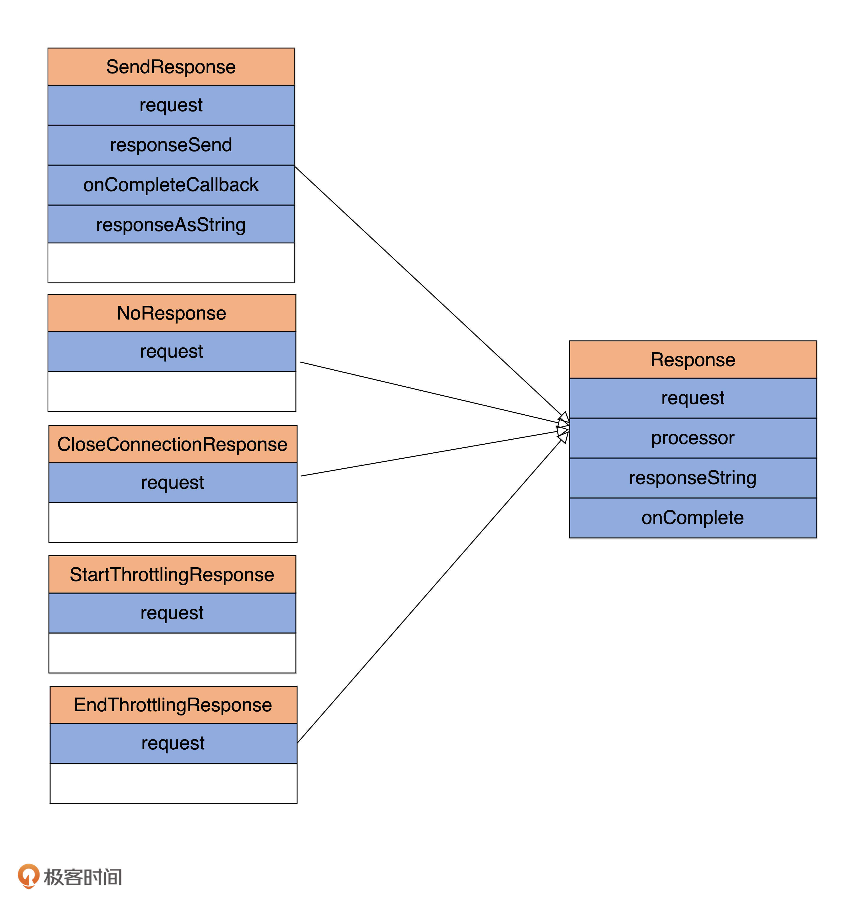
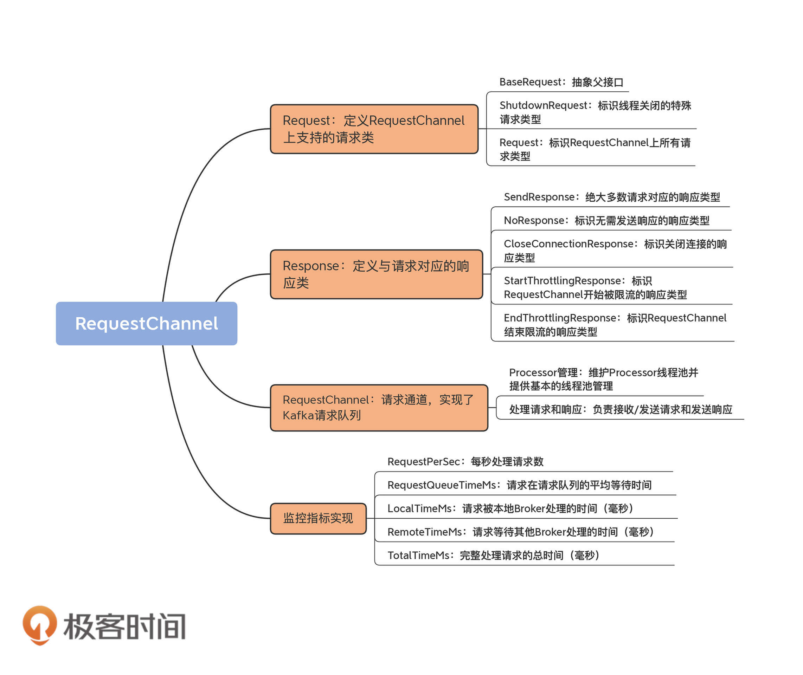

- 00 导读 构建Kafka工程和源码阅读环境、Scala语言热身.md
- 00 开篇词 阅读源码，逐渐成了职业进阶道路上的“必选项”.md
- 00 重磅加餐 带你快速入门Scala语言.md
- 01 日志段：保存消息文件的对象是怎么实现的？.md
- 02 日志（上）：日志究竟是如何加载日志段的？.md
- 03 日志（下）：彻底搞懂Log对象的常见操作.md
- 04 索引（上）：改进的二分查找算法在Kafka索引的应用.md
- 05 索引（下）：位移索引和时间戳索引的区别是什么？.md
- 06 请求通道：如何实现Kafka请求队列？.md
- 07 SocketServer（上）：Kafka到底是怎么应用NIO实现网络通信的？.md
- 08 SocketServer（中）：请求还要区分优先级？.md
- 09 SocketServer（下）：请求处理全流程源码分析.md
- 10 KafkaApis：Kafka最重要的源码入口，没有之一.md
- 11 Controller元数据：Controller都保存有哪些东西？有几种状态？.md
- 12 ControllerChannelManager：Controller如何管理请求发送？.md
- 13 ControllerEventManager：变身单线程后的Controller如何处理事件？.md
- 14 Controller选举是怎么实现的？.md
- 15 如何理解Controller在Kafka集群中的作用？.md
- 16 TopicDeletionManager： Topic是怎么被删除的？.md
- 17 ReplicaStateMachine：揭秘副本状态机实现原理.md
- 18 PartitionStateMachine：分区状态转换如何实现？.md
- 19 TimingWheel：探究Kafka定时器背后的高效时间轮算法.md
- 20 DelayedOperation：Broker是怎么延时处理请求的？.md
- 21 AbstractFetcherThread：拉取消息分几步？.md
- 22 ReplicaFetcherThread：Follower如何拉取Leader消息？.md
- 23 ReplicaManager（上）：必须要掌握的副本管理类定义和核心字段.md
- 24 ReplicaManager（中）：副本管理器是如何读写副本的？.md
- 25 ReplicaManager（下）：副本管理器是如何管理副本的？.md
- 26 MetadataCache：Broker是怎么异步更新元数据缓存的？.md
- 27 消费者组元数据（上）：消费者组都有哪些元数据？.md
- 28 消费者组元数据（下）：Kafka如何管理这些元数据？.md
- 29 GroupMetadataManager：组元数据管理器是个什么东西？.md
- 30 GroupMetadataManager：位移主题保存的只是位移吗？.md
- 31 GroupMetadataManager：查询位移时，不用读取位移主题？.md
- 32 GroupCoordinator：在Rebalance中，Coordinator如何处理成员入组？.md
- 33 GroupCoordinator：在Rebalance中，如何进行组同步？.md
- 特别放送（一）经典的Kafka学习资料有哪些？.md
- 特别放送（三）我是怎么度过日常一天的？.md
- 特别放送（二）一篇文章带你了解参与开源社区的全部流程.md
- 特别放送（五） Kafka 社区的重磅功能：移除 ZooKeeper 依赖.md
- 特别放送（四）20道经典的Kafka面试题详解.md
- 结束语 源码学习，我们才刚上路呢.md
06 请求通道：如何实现Kafka请求队列？
你好，我是胡夕。日志模块我们已经讲完了，你掌握得怎样了呢？如果你在探索源码的过程中碰到了问题，记得在留言区里写下你的困惑，我保证做到知无不言。
现在，让我们开启全新的“请求处理模块”的源码学习之旅。坦率地讲，这是我自己给Kafka源码划分的模块，在源码中可没有所谓的“请求处理模块”的提法。但我始终觉得，这样划分能够帮助你清晰地界定不同部分的源码的作用，可以让你的阅读更有针对性，学习效果也会事半功倍。
在这个模块，我会带你了解请求处理相关的重点内容，包括请求处理通道、请求处理全流程分析和请求入口类分析等。今天，我们先来学习下Kafka是如何实现请求队列的。源码中位于core/src/main/scala/kafka/network下的RequestChannel.scala文件，是主要的实现类。
当我们说到Kafka服务器端，也就是Broker的时候，往往会说它承担着消息持久化的功能，但本质上，它其实就是一个不断接收外部请求、处理请求，然后发送处理结果的Java进程。
你可能会觉得奇怪，Broker不是用Scala语言编写的吗，怎么这里又是Java进程了呢？这是因为，Scala代码被编译之后生成.class文件，它和Java代码被编译后的效果是一样的，因此，Broker启动后也仍然是一个普通的Java进程。
高效地保存排队中的请求，是确保Broker高处理性能的关键。既然这样，那你一定很想知道，Broker上的请求队列是怎么实现的呢？接下来，我们就一起看下Broker底层请求对象的建模和请求队列的实现原理，以及Broker请求处理方面的核心监控指标。
目前，Broker与Clients进行交互主要是基于Request/Response机制，所以，我们很有必要学习一下源码是如何建模或定义Request和Response的。
请求（Request）
我们先来看一下RequestChannel源码中的Request定义代码。
sealed trait BaseRequest
case object ShutdownRequest extends BaseRequest
class Request(val processor: Int,
val context: RequestContext,
val startTimeNanos: Long,
memoryPool: MemoryPool,
@volatile private var buffer: ByteBuffer,
metrics: RequestChannel.Metrics) extends BaseRequest {
......
}
简单提一句，Scala语言中的“trait”关键字，大致类似于Java中的interface（接口）。从代码中，我们可以知道，BaseRequest是一个trait接口，定义了基础的请求类型。它有两个实现类：ShutdownRequest类和Request类。
ShutdownRequest仅仅起到一个标志位的作用。当Broker进程关闭时，请求处理器（RequestHandler，在第9讲我会具体讲到它）会发送ShutdownRequest到专属的请求处理线程。该线程接收到此请求后，会主动触发一系列的Broker关闭逻辑。
Request则是真正定义各类Clients端或Broker端请求的实现类。它定义的属性包括processor、context、startTimeNanos、memoryPool、buffer和metrics。下面我们一一来看。
processor
processor是Processor线程的序号，即这个请求是由哪个Processor线程接收处理的。Broker端参数num.network.threads控制了Broker每个监听器上创建的Processor线程数。
假设你的listeners配置为PLAINTEXT://localhost:9092,SSL://localhost:9093，那么，在默认情况下，Broker启动时会创建6个Processor线程，每3个为一组，分别给listeners参数中设置的两个监听器使用，每组的序号分别是0、1、2。
你可能会问，为什么要保存Processor线程序号呢？这是因为，当Request被后面的I/O线程处理完成后，还要依靠Processor线程发送Response给请求发送方，因此，Request中必须记录它之前是被哪个Processor线程接收的。另外，这里我们要先明确一点：Processor线程仅仅是网络接收线程，不会执行真正的Request请求处理逻辑，那是I/O线程负责的事情。
context
context是用来标识请求上下文信息的。Kafka源码中定义了RequestContext类，顾名思义，它保存了有关Request的所有上下文信息。RequestContext类定义在clients工程中，下面是它主要的逻辑代码。我用注释的方式解释下主体代码的含义。
public class RequestContext implements AuthorizableRequestContext {
public final RequestHeader header; // Request头部数据，主要是一些对用户不可见的元数据信息，如Request类型、Request API版本、clientId等
public final String connectionId; // Request发送方的TCP连接串标识，由Kafka根据一定规则定义，主要用于表示TCP连接
public final InetAddress clientAddress; // Request发送方IP地址
public final KafkaPrincipal principal; // Kafka用户认证类，用于认证授权
public final ListenerName listenerName; // 监听器名称，可以是预定义的监听器（如PLAINTEXT），也可自行定义
public final SecurityProtocol securityProtocol; // 安全协议类型，目前支持4种：PLAINTEXT、SSL、SASL_PLAINTEXT、SASL_SSL
public final ClientInformation clientInformation; // 用户自定义的一些连接方信息
// 从给定的ByteBuffer中提取出Request和对应的Size值
public RequestAndSize parseRequest(ByteBuffer buffer) {
......
}
// 其他Getter方法
......
}
startTimeNanos
startTimeNanos记录了Request对象被创建的时间，主要用于各种时间统计指标的计算。
请求对象中的很多JMX指标，特别是时间类的统计指标，都需要使用startTimeNanos字段。你要注意的是，它是以纳秒为单位的时间戳信息，可以实现非常细粒度的时间统计精度。
memoryPool
memoryPool表示源码定义的一个非阻塞式的内存缓冲区，主要作用是避免Request对象无限使用内存。
当前，该内存缓冲区的接口类和实现类，分别是MemoryPool和SimpleMemoryPool。你可以重点关注下SimpleMemoryPool的tryAllocate方法，看看它是怎么为Request对象分配内存的。
buffer
buffer是真正保存Request对象内容的字节缓冲区。Request发送方必须按照Kafka RPC协议规定的格式向该缓冲区写入字节，否则将抛出InvalidRequestException异常。这个逻辑主要是由RequestContext的parseRequest方法实现的。
public RequestAndSize parseRequest(ByteBuffer buffer) {
if (isUnsupportedApiVersionsRequest()) {
// 不支持的ApiVersions请求类型被视为是V0版本的请求，并且不做解析操作，直接返回
ApiVersionsRequest apiVersionsRequest = new ApiVersionsRequest(new ApiVersionsRequestData(), (short) 0, header.apiVersion());
return new RequestAndSize(apiVersionsRequest, 0);
} else {
// 从请求头部数据中获取ApiKeys信息
ApiKeys apiKey = header.apiKey();
try {
// 从请求头部数据中获取版本信息
short apiVersion = header.apiVersion();
// 解析请求
Struct struct = apiKey.parseRequest(apiVersion, buffer);
AbstractRequest body = AbstractRequest.parseRequest(apiKey, apiVersion, struct);
// 封装解析后的请求对象以及请求大小返回
return new RequestAndSize(body, struct.sizeOf());
} catch (Throwable ex) {
// 解析过程中出现任何问题都视为无效请求，抛出异常
throw new InvalidRequestException("Error getting request for apiKey: " + apiKey +
", apiVersion: " + header.apiVersion() +
", connectionId: " + connectionId +
", listenerName: " + listenerName +
", principal: " + principal, ex);
}
}
}
就像前面说过的，这个方法的主要目的是从ByteBuffer中提取对应的Request对象以及它的大小。
首先，代码会判断该Request是不是Kafka不支持的ApiVersions请求版本。如果是不支持的，就直接构造一个V0版本的ApiVersions请求，然后返回。否则的话，就继续下面的代码。
这里我稍微解释一下ApiVersions请求的作用。当Broker接收到一个ApiVersionsRequest的时候，它会返回Broker当前支持的请求类型列表，包括请求类型名称、支持的最早版本号和最新版本号。如果你查看Kafka的bin目录的话，你应该能找到一个名为kafka-broker-api-versions.sh的脚本工具。它的实现原理就是，构造ApiVersionsRequest对象，然后发送给对应的Broker。
你可能会问，如果是ApiVersions类型的请求，代码中为什么要判断一下它的版本呢？这是因为，和处理其他类型请求不同的是，Kafka必须保证版本号比最新支持版本还要高的ApiVersions请求也能被处理。这主要是考虑到了客户端和服务器端版本的兼容问题。客户端发送请求给Broker的时候，很可能不知道Broker到底支持哪些版本的请求，它需要使用ApiVersionsRequest去获取完整的请求版本支持列表。但是，如果不做这个判断，Broker可能无法处理客户端发送的ApiVersionsRequest。
通过这个检查之后，代码会从请求头部数据中获取ApiKeys信息以及对应的版本信息，然后解析请求，最后封装解析后的请求对象以及请求大小，并返回。
metrics
metrics是Request相关的各种监控指标的一个管理类。它里面构建了一个Map，封装了所有的请求JMX指标。除了上面这些重要的字段属性之外，Request类中的大部分代码都是与监控指标相关的，后面我们再详细说。
响应（Response）
说完了Request代码，我们再来说下Response。Kafka为Response定义了1个抽象父类和5个具体子类，如下图所示：

看到这么多类，你可能会有点蒙，这些都是干吗的呢？别着急，现在我分别给你介绍下各个类的作用。
- Response：定义Response的抽象基类。每个Response对象都包含了对应的Request对象。这个类里最重要的方法是onComplete方法，用来实现每类Response被处理后需要执行的回调逻辑。
- SendResponse：Kafka大多数Request处理完成后都需要执行一段回调逻辑，SendResponse就是保存返回结果的Response子类。里面最重要的字段是onCompletionCallback，即指定处理完成之后的回调逻辑。
- NoResponse：有些Request处理完成后无需单独执行额外的回调逻辑。NoResponse就是为这类Response准备的。
- CloseConnectionResponse：用于出错后需要关闭TCP连接的场景，此时返回CloseConnectionResponse给Request发送方，显式地通知它关闭连接。
- StartThrottlingResponse：用于通知Broker的Socket Server组件（后面几节课我会讲到它）某个TCP连接通信通道开始被限流（throttling）。
- EndThrottlingResponse：与StartThrottlingResponse对应，通知Broker的SocketServer组件某个TCP连接通信通道的限流已结束。
你可能又会问了：“这么多类，我都要掌握吗？”其实是不用的。你只要了解SendResponse表示正常需要发送Response，而NoResponse表示无需发送Response就可以了。至于CloseConnectionResponse，它是用于标识关闭连接通道的Response。而后面两个Response类不是很常用，它们仅仅在对Socket连接进行限流时，才会派上用场，这里我就不具体展开讲了。
Okay，现在，我们看下Response相关的代码部分。
abstract class Response(val request: Request) {
locally {
val nowNs = Time.SYSTEM.nanoseconds
request.responseCompleteTimeNanos = nowNs
if (request.apiLocalCompleteTimeNanos == -1L)
request.apiLocalCompleteTimeNanos = nowNs
}
def processor: Int = request.processor
def responseString: Option[String] = Some("")
def onComplete: Option[Send => Unit] = None
override def toString: String
}
这个抽象基类只有一个属性字段：request。这就是说，每个Response对象都要保存它对应的Request对象。我在前面说过，onComplete方法是调用指定回调逻辑的地方。SendResponse类就是复写（Override）了这个方法，如下所示：
class SendResponse(request: Request,
val responseSend: Send,
val responseAsString: Option[String],
val onCompleteCallback: Option[Send => Unit])
extends Response(request) {
......
override def onComplete: Option[Send => Unit] = onCompleteCallback
}
这里的SendResponse类继承了Response父类，并重新定义了onComplete方法。复写的逻辑很简单，就是指定输入参数onCompleteCallback。其实方法本身没有什么可讲的，反倒是这里的Scala语法值得多说几句。
Scala中的Unit类似于Java中的void，而“Send => Unit”表示一个方法。这个方法接收一个Send类实例，然后执行一段代码逻辑。Scala是函数式编程语言，函数在Scala中是“一等公民”，因此，你可以把一个函数作为一个参数传给另一个函数，也可以把函数作为结果返回。这里的onComplete方法就应用了第二种用法，也就是把函数赋值给另一个函数，并作为结果返回。这样做的好处在于，你可以灵活地变更onCompleteCallback来实现不同的回调逻辑。
RequestChannel
RequestChannel，顾名思义，就是传输Request/Response的通道。有了Request和Response的基础，下面我们可以学习RequestChannel类的实现了。
我们先看下RequestChannel类的定义和重要的字段属性。
class RequestChannel(val queueSize: Int, val metricNamePrefix : String) extends KafkaMetricsGroup {
import RequestChannel._
val metrics = new RequestChannel.Metrics
private val requestQueue = new ArrayBlockingQueue[BaseRequest](queueSize)
private val processors = new ConcurrentHashMap[Int, Processor]()
val requestQueueSizeMetricName = metricNamePrefix.concat(RequestQueueSizeMetric)
val responseQueueSizeMetricName = metricNamePrefix.concat(ResponseQueueSizeMetric)
......
}
RequestChannel类实现了KafkaMetricsGroup trait，后者封装了许多实用的指标监控方法，比如，newGauge方法用于创建数值型的监控指标，newHistogram方法用于创建直方图型的监控指标。
就RequestChannel类本身的主体功能而言，它定义了最核心的3个属性：requestQueue、queueSize和processors。下面我分别解释下它们的含义。
每个RequestChannel对象实例创建时，会定义一个队列来保存Broker接收到的各类请求，这个队列被称为请求队列或Request队列。Kafka使用Java提供的阻塞队列ArrayBlockingQueue实现这个请求队列，并利用它天然提供的线程安全性来保证多个线程能够并发安全高效地访问请求队列。在代码中，这个队列由变量requestQueue定义。
而字段queueSize就是Request队列的最大长度。当Broker启动时，SocketServer组件会创建RequestChannel对象，并把Broker端参数queued.max.requests赋值给queueSize。因此，在默认情况下，每个RequestChannel上的队列长度是500。
字段processors封装的是RequestChannel下辖的Processor线程池。每个Processor线程负责具体的请求处理逻辑。下面我详细说说Processor的管理。
Processor管理
上面代码中的第六行创建了一个Processor线程池——当然，它是用Java的ConcurrentHashMap数据结构去保存的。Map中的Key就是前面我们说的processor序号，而Value则对应具体的Processor线程对象。
这个线程池的存在告诉了我们一个事实：当前Kafka Broker端所有网络线程都是在RequestChannel中维护的。既然创建了线程池，代码中必然要有管理线程池的操作。RequestChannel中的addProcessor和removeProcessor方法就是做这些事的。
def addProcessor(processor: Processor): Unit = {
// 添加Processor到Processor线程池
if (processors.putIfAbsent(processor.id, processor) != null)
warn(s"Unexpected processor with processorId ${processor.id}")
newGauge(responseQueueSizeMetricName,
() => processor.responseQueueSize,
// 为给定Processor对象创建对应的监控指标
Map(ProcessorMetricTag -> processor.id.toString))
}
def removeProcessor(processorId: Int): Unit = {
processors.remove(processorId) // 从Processor线程池中移除给定Processor线程
removeMetric(responseQueueSizeMetricName, Map(ProcessorMetricTag -> processorId.toString)) // 移除对应Processor的监控指标
}
代码很简单，基本上就是调用ConcurrentHashMap的putIfAbsent和remove方法分别实现增加和移除线程。每当Broker启动时，它都会调用addProcessor方法，向RequestChannel对象添加num.network.threads个Processor线程。
如果查询Kafka官方文档的话，你就会发现，num.network.threads这个参数的更新模式（Update Mode）是Cluster-wide。这就说明，Kafka允许你动态地修改此参数值。比如，Broker启动时指定num.network.threads为8，之后你通过kafka-configs命令将其修改为3。显然，这个操作会减少Processor线程池中的线程数量。在这个场景下，removeProcessor方法会被调用。
处理Request和Response
除了Processor的管理之外，RequestChannel的另一个重要功能，是处理Request和Response，具体表现为收发Request和发送Response。比如，收发Request的方法有sendRequest和receiveRequest：
def sendRequest(request: RequestChannel.Request): Unit = {
requestQueue.put(request)
}
def receiveRequest(timeout: Long): RequestChannel.BaseRequest =
requestQueue.poll(timeout, TimeUnit.MILLISECONDS)
def receiveRequest(): RequestChannel.BaseRequest =
requestQueue.take()
所谓的发送Request，仅仅是将Request对象放置在Request队列中而已，而接收Request则是从队列中取出Request。整个流程构成了一个迷你版的“生产者-消费者”模式，然后依靠ArrayBlockingQueue的线程安全性来确保整个过程的线程安全，如下所示：

对于Response而言，则没有所谓的接收Response，只有发送Response，即sendResponse方法。sendResponse是啥意思呢？其实就是把Response对象发送出去，也就是将Response添加到Response队列的过程。
def sendResponse(response: RequestChannel.Response): Unit = {
if (isTraceEnabled) { // 构造Trace日志输出字符串
val requestHeader = response.request.header
val message = response match {
case sendResponse: SendResponse =>
s"Sending ${requestHeader.apiKey} response to client ${requestHeader.clientId} of ${sendResponse.responseSend.size} bytes."
case _: NoOpResponse =>
s"Not sending ${requestHeader.apiKey} response to client ${requestHeader.clientId} as it's not required."
case _: CloseConnectionResponse =>
s"Closing connection for client ${requestHeader.clientId} due to error during ${requestHeader.apiKey}."
case _: StartThrottlingResponse =>
s"Notifying channel throttling has started for client ${requestHeader.clientId} for ${requestHeader.apiKey}"
case _: EndThrottlingResponse =>
s"Notifying channel throttling has ended for client ${requestHeader.clientId} for ${requestHeader.apiKey}"
}
trace(message)
}
// 找出response对应的Processor线程，即request当初是由哪个Processor线程处理的
val processor = processors.get(response.processor)
// 将response对象放置到对应Processor线程的Response队列中
if (processor != null) {
processor.enqueueResponse(response)
}
}
sendResponse方法的逻辑其实非常简单。
前面的一大段if代码块仅仅是构造Trace日志要输出的内容。根据不同类型的Response，代码需要确定要输出的Trace日志内容。
接着，代码会找出Response对象对应的Processor线程。当Processor处理完某个Request后，会把自己的序号封装进对应的Response对象。一旦找出了之前是由哪个Processor线程处理的，代码直接调用该Processor的enqueueResponse方法，将Response放入Response队列中，等待后续发送。
监控指标实现
RequestChannel类还定义了丰富的监控指标，用于实时动态地监测Request和Response的性能表现。我们来看下具体指标项都有哪些。
object RequestMetrics {
val consumerFetchMetricName = ApiKeys.FETCH.name + "Consumer"
val followFetchMetricName = ApiKeys.FETCH.name + "Follower"
val RequestsPerSec = "RequestsPerSec"
val RequestQueueTimeMs = "RequestQueueTimeMs"
val LocalTimeMs = "LocalTimeMs"
val RemoteTimeMs = "RemoteTimeMs"
val ThrottleTimeMs = "ThrottleTimeMs"
val ResponseQueueTimeMs = "ResponseQueueTimeMs"
val ResponseSendTimeMs = "ResponseSendTimeMs"
val TotalTimeMs = "TotalTimeMs"
val RequestBytes = "RequestBytes"
val MessageConversionsTimeMs = "MessageConversionsTimeMs"
val TemporaryMemoryBytes = "TemporaryMemoryBytes"
val ErrorsPerSec = "ErrorsPerSec"
}
可以看到，指标有很多，不过别有压力，我们只要掌握几个重要的就行了。
- RequestsPerSec：每秒处理的Request数，用来评估Broker的繁忙状态。
- RequestQueueTimeMs：计算Request在Request队列中的平均等候时间，单位是毫秒。倘若Request在队列的等待时间过长，你通常需要增加后端I/O线程的数量，来加快队列中Request的拿取速度。
- LocalTimeMs：计算Request实际被处理的时间，单位是毫秒。一旦定位到这个监控项的值很大，你就需要进一步研究Request被处理的逻辑了，具体分析到底是哪一步消耗了过多的时间。
- RemoteTimeMs：Kafka的读写请求（PRODUCE请求和FETCH请求）逻辑涉及等待其他Broker操作的步骤。RemoteTimeMs计算的，就是等待其他Broker完成指定逻辑的时间。因为等待的是其他Broker，因此被称为Remote Time。这个监控项非常重要！Kafka生产环境中设置acks=all的Producer程序发送消息延时高的主要原因，往往就是Remote Time高。因此，如果你也碰到了这样的问题，不妨先定位一下Remote Time是不是瓶颈。
- TotalTimeMs：计算Request被处理的完整流程时间。**这是最实用的监控指标，没有之一！**毕竟，我们通常都是根据TotalTimeMs来判断系统是否出现问题的。一旦发现了问题，我们才会利用前面的几个监控项进一步定位问题的原因。
RequestChannel定义了updateMetrics方法，用于实现监控项的更新，因为逻辑非常简单，我就不展开说了，你可以自己阅读一下。
总结
好了，又到了总结时间。
今天，我带你阅读了Kafka请求队列的实现源码。围绕这个问题，我们学习了几个重点内容。
- Request：定义了Kafka Broker支持的各类请求。
- Response：定义了与Request对应的各类响应。
- RequestChannel：实现了Kafka Request队列。
- 监控指标：封装了与Request队列相关的重要监控指标。

希望你结合今天所讲的内容思考一下，Request和Response在请求通道甚至是SocketServer中的流转过程，这将极大地帮助你了解Kafka是如何处理外部发送的请求的。当然，如果你觉得这个有难度，也不必着急，因为后面我会专门用一节课来告诉你这些内容。
课后讨论
如果我想监控Request队列当前的使用情况（比如当前已保存了多少个Request），你可以结合源码指出，应该使用哪个监控指标吗？
欢迎你在留言区畅所欲言，跟我交流讨论，也欢迎你把今天的内容分享给你的朋友。
© 2019 - 2023 Liangliang Lee. Powered by Vert.x and hexo-theme-book.